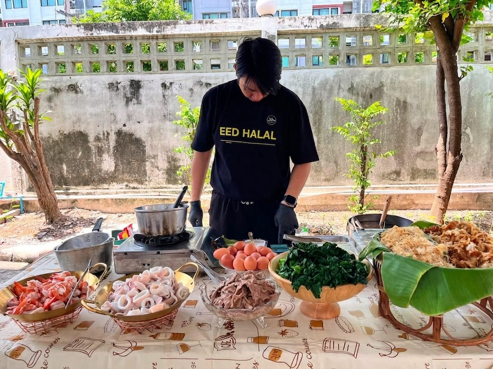

Live Cooking Station ฮาลาล
เชฟปรุงสดให้แขกเห็นหน้างาน
ซุ้มปรุงสดฮาลาลที่เชฟปรุงอาหารหน้างาน เสิร์ฟจานต่อจานทันทีที่เสร็จ — จุดเด่นสำหรับงานธีม งาน VIP งานเปิดตัว และอีเวนต์ 100–500+ คน ใบรับรองฮาลาลจาก CICOT

HALAL · CICOT CERTIFIEDเชฟปรุงจริง เสิร์ฟจานต่อจาน แขกได้เห็นขั้นตอน
งานแบบไหนที่ Live Cooking Station ลงตัว?
ซุ้มปรุงสดเป็นตัวเลือกของงานที่อยากได้มากกว่าแค่อาหารอร่อย — อยากได้จุดเด่นให้งาน จุดให้แขกมาพูดคุย และบรรยากาศของเชฟปรุงจริงหน้างาน
งานธีม
ออกแบบซุ้มและเมนูให้เข้ากับธีมทั้งงาน ทั้งไลน์อาหาร วัตถุดิบ และการนำเสนอ
งาน VIP และงานรับรอง
แขกสำคัญได้อาหารปรุงสดเสิร์ฟตรงหน้า สร้างความรู้สึกพิเศษและเป็นทางการ
งานเปิดตัวและอีเวนต์
จุดปรุงสดเป็นจุดรวมและจุดถ่ายรูปของงาน อาหารร้อนใหม่ตลอดช่วงเวลา
งานบริษัทที่อยากสร้างจุดเด่น
เพิ่มซุ้มปรุงสดหนึ่งจุดให้งานเลี้ยงเดิมกลายเป็นงานที่แขกจำได้
ทำไมงานที่จัด Live Cooking ต่างจากงานอื่น
อาหารปรุงจริงต่อหน้าแขก
แขกได้เห็นเชฟปรุงทีละจานตั้งแต่เริ่มจนเสิร์ฟ สร้างความเชื่อมั่นในความสดและความสะอาด
จานต่อจาน เสิร์ฟร้อนใหม่
แต่ละจานปรุงเสร็จเสิร์ฟทันที ไม่ถูกวางทิ้งไว้บนไลน์ อุณหภูมิและรสชาติคงที่ทุกจาน
จุดศูนย์กลางของงาน
กลิ่น เสียง และภาพเชฟปรุงสด ดึงให้แขกมารวมตัว — ตัดสินใจเรื่องสถานที่วางซุ้มร่วมกับทีมได้
Live Cooking หรืออยากเทียบกับแบบอื่น?
เราให้บริการจัดเลี้ยง 3 รูปแบบ — เทียบจุดเด่นคร่าว ๆ ได้เลย ถ้ายังไม่ชัวร์ ทัก LINE ให้ทีมช่วยตัดสินใจก็ได้
เสียงจากองค์กรที่จัดงานกับเรา

"ทักไปตอนเย็น วันรุ่งขึ้นได้ใบเสนอราคาแล้ว ง่ายมาก ทีมประสานงานตอบไวและช่วยแนะนำเมนูได้ดี อาหารสดอร่อย ไม่เคยผิดหวังเลยสักครั้ง"

"สั่งข้าวกล่องให้ทีม 80 คนในงานสัมมนา EED HALAL จัดการทุกอย่างให้ครบ ตั้งแต่เมนูจนถึงใบเสนอราคา ส่งตรงเวลา อาหารอร่อย ทีมงานชื่นชมกันทั้งงาน"
คำถามที่พบบ่อยเรื่อง Live Cooking Station
ซุ้มอาหารที่เชฟปรุงสดอยู่หน้างาน เสิร์ฟจานต่อจานทันทีที่ปรุงเสร็จ — แขกได้เห็นขั้นตอนการปรุงจริง และได้อาหารร้อนใหม่ทุกจาน ฮาลาล 100% ภายใต้มาตรฐาน CICOT
เหมาะกับงานที่อยากสร้างจุดเด่น เช่น งานธีม งาน VIP และงานรับรอง งานเปิดตัว งานอีเวนต์ และงานบริษัทที่อยากให้งานเลี้ยงเป็นที่จดจำ — รองรับแขก 100–500+ คน
ได้ครับ เมนูออกแบบตามธีมและงบของงาน — ทีมช่วยเลือกเมนูที่โชว์หน้างานได้สวยและปรุงได้เร็ว สลับหมุนเวียนได้ตลอดงาน แขกไม่ต้องรอคิว
บริการจัดเลี้ยงของเราวางไว้สำหรับงาน 100–500+ คน — ถ้างานของคุณเล็กกว่านั้น ทัก LINE มาคุยกันก่อนได้ครับ ทีมงานช่วยหาตัวเลือกที่เหมาะสม
งาน 100+ คน แนะนำแจ้งล่วงหน้า 1–2 สัปดาห์ เพื่อให้ทีมเตรียมเชฟ วัตถุดิบ และอุปกรณ์ซุ้มให้ครบ และยิ่งจองเร็วก็ยิ่งได้คิววันงานที่ต้องการ
ทัก LINE แจ้งประเภทงาน ธีม จำนวนแขก วันที่ สถานที่ และงบประมาณ — ออกใบเสนอราคาได้ภายใน 15 นาทีหลังทัก (เวลาทำการ) ฟรี ไม่ผูกมัด พร้อมเอกสารสำหรับฝ่ายจัดซื้อ
อยากเพิ่มจุดเด่นให้งานด้วยซุ้มปรุงสด?
ส่งรายละเอียดงานมาได้เลยครับ บอกประเภทงาน ธีม จำนวนแขก วันที่ และงบ — ทีมช่วยออกแบบซุ้ม ปรุงสดและเมนูให้เหมาะกับงาน พร้อมใบเสนอราคาฟรี ไม่ผูกมัด